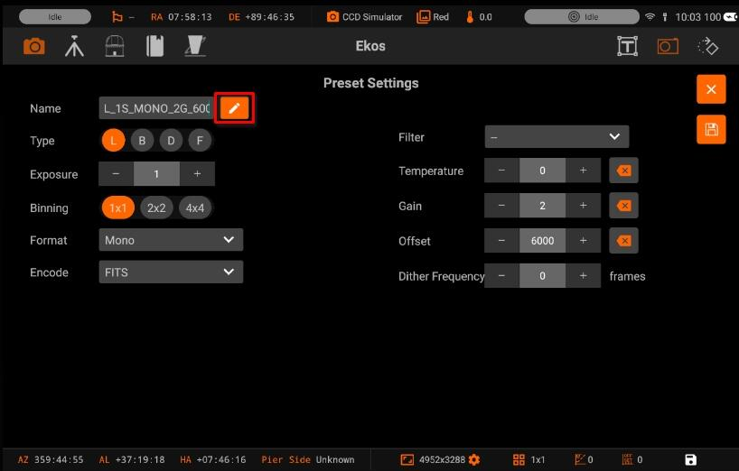
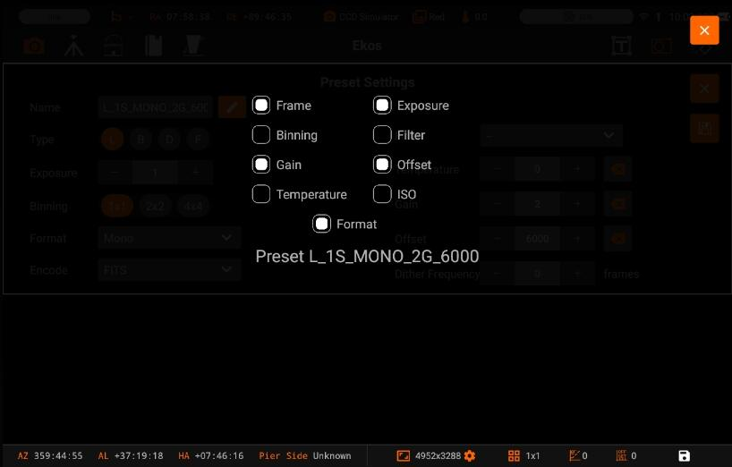
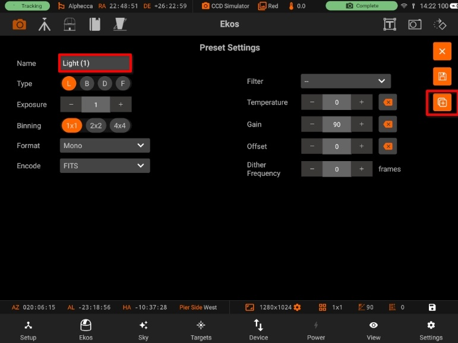
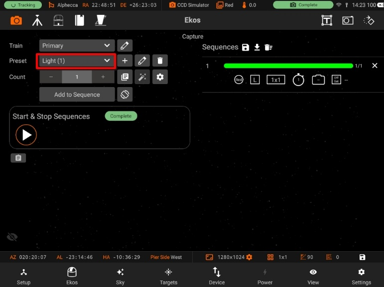
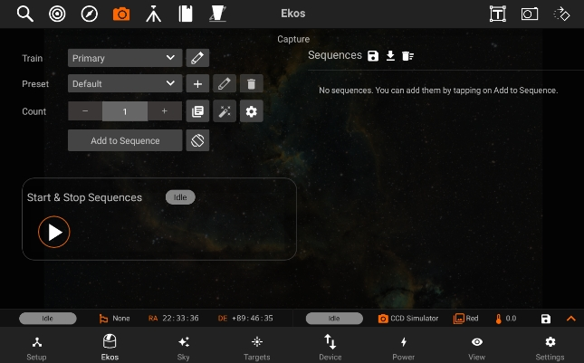
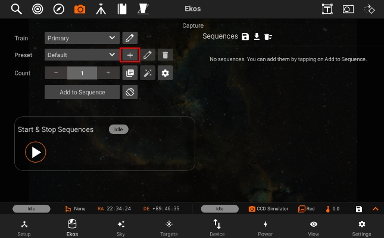
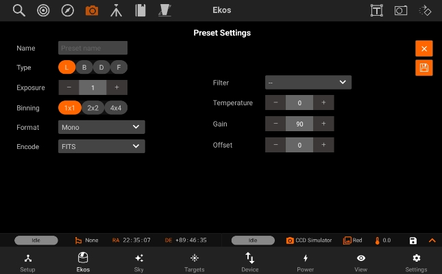
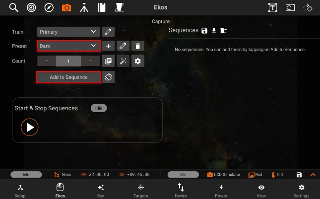
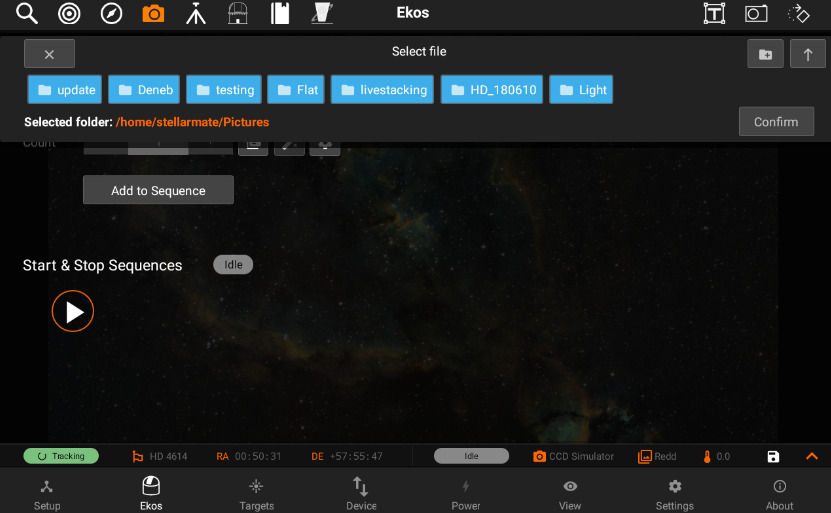
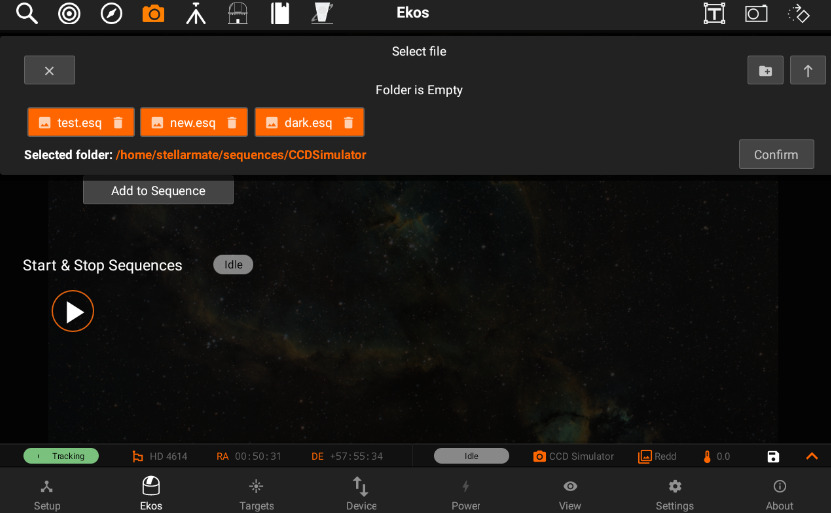

Capture
The Capture module is where you create sequences to capture your targets. In the typical astrophotography workflow, Capture module is used last after you finished Focusing, Aligning, and Guiding your target. Let us first define some common terms:
Train
You can Select / Edit the train specifically for Capture module. Each module has it's own train. Visit Optical trains topic for more.
Capture Presets has the following structure:

- Preset name: Name of the preset.
- Edit auto generate preset name

- Frame Type: Specify the type of desired camera frame. Options are Light, Dark, Bias, and Flat frames.
- Exposure: Specify exposure duration in seconds.
- Binning: Specify horizontal (X) and vertical (Y) binning.
- Format: Specify capture save format. For all CCDs, only FITS option is available.
- Encode: For DSLR cameras, you can an additional option to save in Native format (e.g. RAW or JPEG).
- Filter: Specify desired filter.
- Temperature: Set the desired temperature, if you camera is equipped with a cooler. Check the option to force temperature setting before any capture. Capture process is only started after measured temperature is within requested temperature tolerance
- Gain: Specify the value of gain. Leaving it to -- would not change the current gain set in the camera
- ISO: For DSLR cameras, specify the ISO value.
- Offset: Specify the value added to avoid the reads to clip at value "zero". Leaving it to -- would not change the current offset set in the camera.
Duplicate Preset
Now you can duplicate an existing preset with the same information and save it as an new Preset.
Duplicate preset contains "(1)" after the name.

After saving the preset, it is added as a new preset.

Count: Number of sequences you want to capture.
After creating your presets, you can now tap on the preset dropdown in order to select the preset you want, and then tap on Add to Sequence, so the sequence can be added to the sequence list.
In the below example, you can see that there are 3 different jobs in the sequence list as shown by the filter in the beginning of each one. (red, green, and blue)
- Sequence: Capture a number of images with the settings specified in a preset.
- The count field in capture module specify the number of images to capture using that preset.
- Delay parameters is used to introduce a delay in seconds between each captured image and default to zero.
- A sequence is also referred to as Job

- Creating a sequence
To create a sequence, you should first create a new preset by tapping on the + button next to the preset dropdown box.


After filling the preset settings, you need to add a sequence

Once the sequence is added, you have to tap on the Save Icon on the top-right.

The default directory is under "Pictures". You can go back to previous directories by going back.

Sequence files are saved in "/home/stellarmate/sequences" path with respect to camera name.

By selecting the sequence file, you will be able to add a sequence in your sequences and can capture your images accordingly.

Sequences have the following structure, displayed through icons for simplicity:
- Top row
- Job Number
- Job Progress Bar
- Count Progress
- Delete Job
- Bottom row
- Filter
- Frame Type
- Binning
- Exposure
- Gain/ISO
- Offset

After adding the sequences, tap on the Play button under the Progress header to start the sequence.

During the capture, a soft "ding" sound will be played for each capture (you can turn on sounds by switching from Ekos Tab to Settings Tab and then toggling sounds on). After the capture is complete, you will see a notification message that says "CCD capture completed" and a "complete" sound will be played. In the case of the capturing processing aborted for any reason, an "error" sounds will be played, and a notification message will be shown.